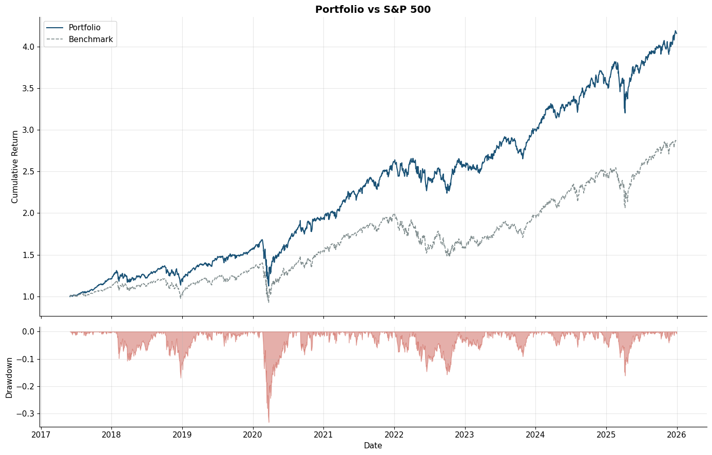
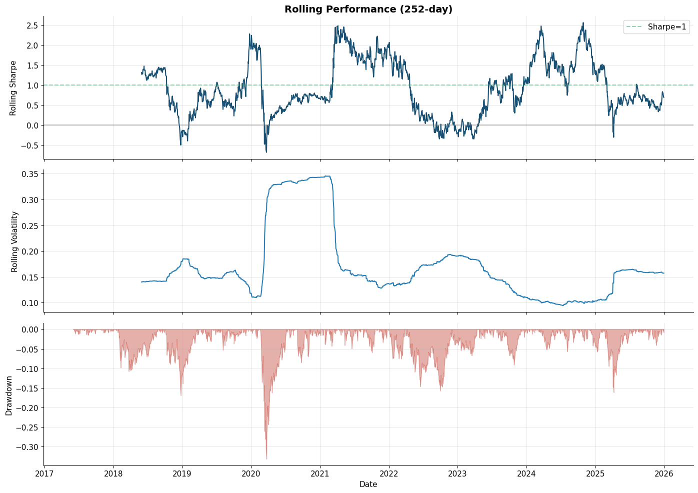
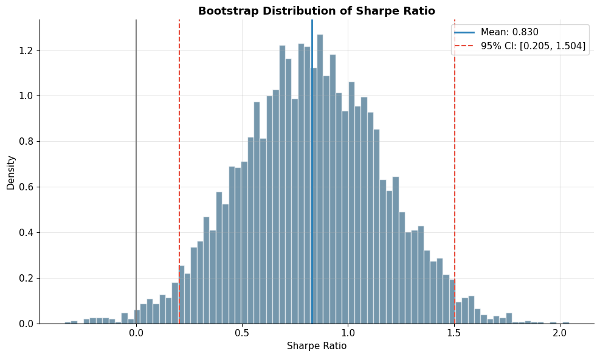
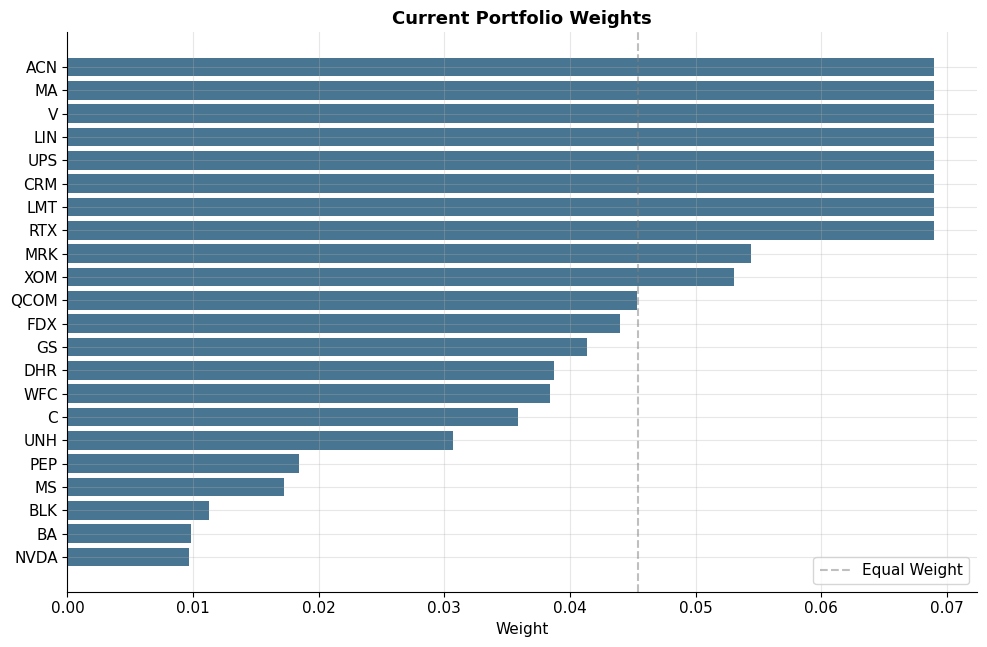
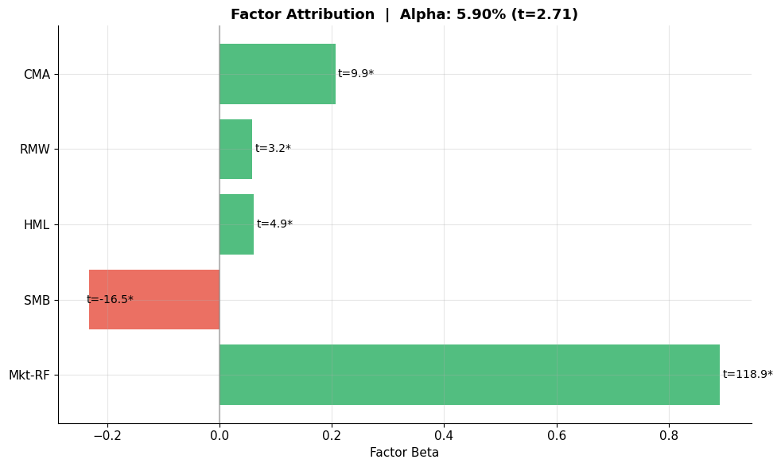

From point-in-time data to optimised portfolio: walk-forward backtests with purge and embargo, HMM-based regime overlays, an ensemble forecast, transaction-cost-aware optimisation, and bootstrap confidence intervals. The whole thing is config-driven and reproducible.
A research-grade quant framework designed around a single principle: do not let information from the future leak into the past. Most academic-style backtests fail this test. This one is built so that every signal, every model fit, and every portfolio decision is computed with only the data that would have been available at that point in time.
The pipeline ingests prices, macro series, and fundamentals into a point-in-time store; engineers technical, fundamental, and factor-exposure features; trains an ensemble of linear and tree-based models on a walk-forward schedule with purge and embargo; overlays a hidden Markov regime model; runs the resulting signals through a constrained optimiser with a transaction-cost model; and finally evaluates the result with bootstrap confidence intervals and stress-regime holdouts.
The output is a strategy that does not just look good in-sample — it is stress-tested across regimes, costs, and the random seeds that lab-grade backtests usually paper over. The five charts below come straight from the latest run.
Everything is config-driven. Swap the universe, retune the optimiser, or change the cost assumption from a YAML file. No code edits required for routine experiments.





Technical, fundamental, macro, and factor-exposure features computed on a PIT store so no signal sees information that did not exist at decision time.
ElasticNet, XGBoost, and LightGBM trained on a walk-forward schedule with purge and embargo, then stacked. HMM regime model runs as a separate overlay.
Cross-sectional normalisation, ensemble combine, and a transaction cost model that bites at the optimiser stage — not just at evaluation.
Mean-variance optimiser with sector caps, position limits, turnover constraints, and a leverage budget. Cost-aware target weights, not paper weights.
Universe selection and walk-forward backtest engine with rolling refits, no peeking, and full audit logs of which model trained on which data.
Performance metrics, factor attribution, bootstrap confidence intervals, and a stress-regime holdout to catch strategies that only work in calm markets.
output/.tests/test_data_integrity.py — catches PIT violations and missing-bar issues before a model ever sees the data.# 1. Install dependencies pip install -r quant_research/requirements.txt # 2. Run the full pipeline (config-driven) python quant_research/main.py --config quant_research/config/base.yaml # 3. Outputs land in quant_research/output/ ls quant_research/output/ # equity_curve.png rolling_metrics.png bootstrap_sharpe.png # portfolio_weights.png factor_attribution.png
quant_research/config/.